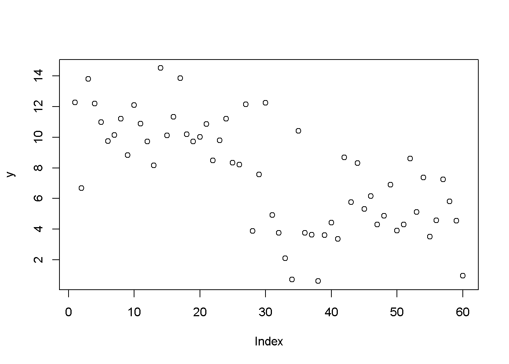
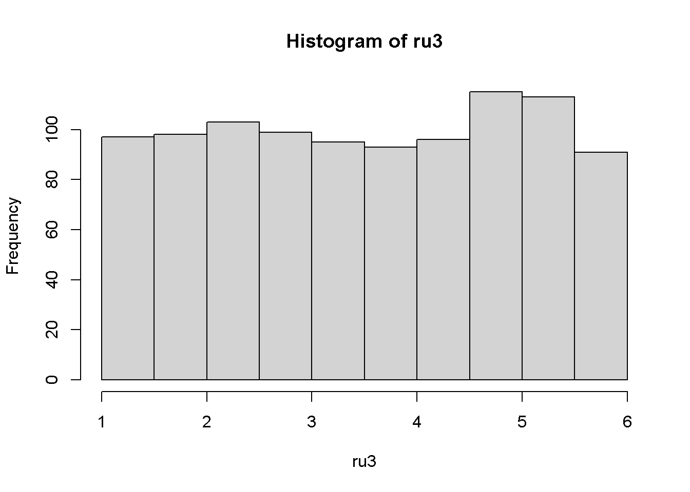
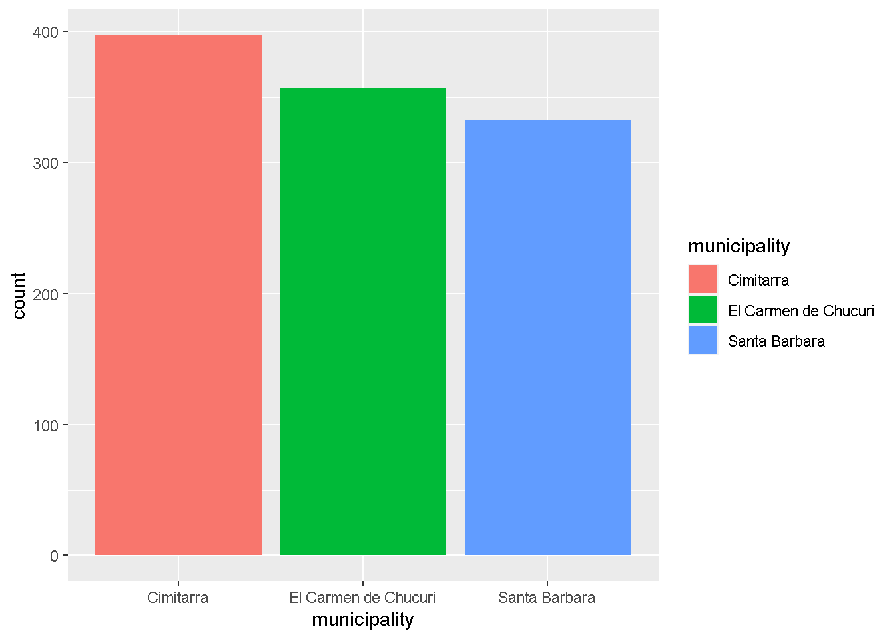

Chapter 7 De números aleatorios, distribuciones y probabilidades
En R, existen funciones para la generación de números aleatorios, es decir, podemos generar cualquier número de 0 a infinito de forma automática. Para esto, debemos especificar la distribución de probabilidad de la cual queremos obtener estos números aleatorios.
Una distribución de probabilidad describe la gama de resultados que podemos obtener. De esta manera, la probabilidad de que obtengamos un valor dependerá de la distribución de probabilidad.
Ejemplo:
7.0.0.1 La probabilidad de los dados:
Un dado convencional se caracteriza por poseer 6 lados, y cada lado representa un valor de 1 al 6. Frecuentemente en juegos de mesa como el parqués, mientras más alto sea el número, más podremos avanzar y ganar. Al lanzar el dado para poder avanzar, existe una probabilidad fija de obtener cualquiera de los 6 lados. Ya que esta probabilidad es la misma para cada lado (1/6), podríamos decir que la distribución de los números de un dado pertenece a una distribución uniforme.
7.0.1 Distribución uniforme
En nuestro ejemplo del dado, planteamos que la distribución de los números de cada lado del dado tiene una distribucion uniforme, debido a que la probabilidad de de obtener cada lado es la misma. Vamos a explorar un poco esto en R.
En nuestro ejemplo del dado, planteamos que la distribución de los números de cada lado del dado es uniforme, debido a que la probabilidad de obtener cada lado es la misma. Vamos a explorar un poco esto en R.
Para obtener un número aleatorio “n” de una distribución uniforme utilizamos runif()
?runif
Vamos a escoger 10 números aleatorios del 1 al 6 provenientes de una distribución uniforme
ru1 <- runif(n = 10, min = 1, max = 6) #Los números que obtendremos tienen decimales
hist(ru1)
Según nuestro histograma, y dependiendo de los números que se seleccionen, puede que obtengamos más veces un número que otro, ¿entonces la probabilidad no es la misma?
ru2 <- runif(n =100, min = 1, max = 6)
hist(ru2)
ru3 <- runif(n =1000, min = 1, max = 6)
hist(ru3)
¡Ahora nuestro histograma parece más uniforme!. Cuando trabajamos con datos, siempre es una buena practica tener una muestra grande, con esto evitamos el sesgo en nuestros analisis.
7.0.2 Distribución normal
La distribución normal es una de las más importantes, ya que se ajusta a muchos datos que representan procesos en la vida real. Su representación se asemeja a la de una campana, la campana de Gauss.
Para obtener un número aleatorio “n” de una distribución normal utilizamos rnorm()
?rnorm
rnorm(n = 4, mean = 100, sd = 5)
- [1] 93.63288 99.30600 98.59867 95.88838?set.seed para reproducir los mismos números Utilizamos ?set.seed para reproducir el mismo grupo de números cada vez
set.seed(6)
rnorm(n = 10, mean = 5, sd = 5)
- [1] 6.348030 1.850073 9.343299 13.635978 5.120938 6.840126 -1.546021
- [8] 8.693110 5.224365 -0.241986
set.seed(6)
rnorm(n = 10, mean = 5, sd = 5)
- [1] 6.348030 1.850073 9.343299 13.635978 5.120938 6.840126 -1.546021
- [8] 8.693110 5.224365 -0.241986
set.seed(4)
rnorm(n = 10, mean = 5, sd = 5)
- [1] 6.083774 2.287537 9.455723 7.979903 13.178090 8.446377 -1.406233
- [8] 3.934277 14.482699 13.884316Distribución normal estándar
rn<-rnorm(n = 100)
rn<-rnorm(n = 1000, mean = 0, sd = 1)
rn
- [1] 0.4276382246 0.7445646452 0.8652207970 0.3053288101 -0.1140227912
- [6] 0.4236522402 -0.7977096868 -0.6041972494 1.7150105938 -0.7159482778
- [11] -0.1332356122 -0.9997650626 1.8737601171 -0.3373884320 0.9732702887
- [16] 0.9878279309 -0.9412566085 0.3491855939 -0.5944186817 -2.3822428313
- [21] 1.0780189737 0.6682451050 -0.9646256667 -1.9752373319 -0.5847739007
- [26] 0.9692770362 0.5522923259 -0.0821555007 -1.6767137584 1.2126074270
- [31] 1.0004998710 0.7193289908 -0.8443641520 0.6219853903 -0.7226137804
- [36] -0.4494786251 -1.1955060501 0.3904723630 -0.5163766426 0.9098689779
- [41] 0.8769846530 -0.8161958099 1.5392932699 1.3745257156 -0.4832487112
- [46] 0.5503499503 -0.8573656630 -0.7069613662 -2.0970775334 1.0994367548
- [51] 0.3420340890 0.4908294804 -0.9319990260 -1.4278919839 0.9757650946
- [56] -1.5463411878 0.0177034792 -0.7747174012 -0.2293422872 -0.2743821044
- [61] 1.7960637815 -0.4781128994 -0.5947628530 -2.2579382170 1.6826072118
- [66] 0.0722906844 -0.4400240932 0.6265733926 -0.7997960594 -1.1279860222
- [71] -1.0250160534 0.0710717295 0.3817111616 -1.6225883175 1.9005426699
- [76] -0.7161791664 0.3804596689 0.4408428474 0.2573258583 -0.1794485371
- [81] -0.6901276793 -0.0004228025 0.5655808964 -1.2087470098 -0.3461711560
- [86] -0.6501970444 -0.8895916708 1.4770298873 -1.1954751385 1.7504948348
- [91] 1.2147301438 -1.5478002681 -0.3022460325 1.0392077163 -0.7678417256
- [96] 1.5246725805 -2.4220873073 0.5563283175 1.1055339071 0.1664368159
- [101] -0.2254622973 -0.2284123308 -0.2531892268 2.0682733320 1.5831898585
- [106] -1.0425907454 -0.0083874004 -1.3340878930 0.1465360292 -0.7878234239
- [111] -0.2889975985 0.6668393001 -0.1366312200 0.2240893077 1.1172066671
- [116] -1.4384943976 0.6343657248 -0.4991948036 1.1262724375 -0.1001846870
- [121] -1.1098420161 0.6579242619 -0.0432960143 0.6283892250 -0.9368292125
- [126] -0.3573834052 -0.0450729179 -0.3480538604 -0.3589739053 0.3956152453
- [131] -0.9839441590 -0.0227005621 -0.8845502051 0.4850404388 -0.8315306232
- [136] 1.1731508209 0.0610154635 0.1567536213 0.4689057556 0.5451607954
- [141] 0.3956021631 -0.9213633453 -0.6765726109 -1.9438953057 0.1199831566
- [146] 1.2660772698 -1.0979868005 0.4379064582 0.6163930437 0.0178696423
- [151] -1.2391890315 -0.5042209305 1.3167816776 0.7944301911 0.4850341753
- [156] 2.3710318129 -0.2817050485 0.1989954772 0.8102352209 -0.1222585855
- [161] 1.0077194424 0.5175821424 -0.2299713919 -0.1676337785 -2.4760416363
- [166] -0.6011542265 0.0315086105 1.2261245883 -0.6992148092 -1.5041487894
- [171] -0.2251810058 -0.0089366880 -1.4783616541 -1.8477489255 -0.8460308108
- [176] 1.2557477353 -1.3505019578 0.3238151320 0.1187950226 0.6496161824
- [181] 0.6816177096 2.5175156469 0.3025249939 -0.6638106508 0.0629558587
- [186] -1.1876628243 -0.4205033949 -0.7476204485 -0.1263272546 -1.0186670963
- [191] -2.8395830580 1.5114690560 1.4423545651 0.5053692836 -0.7572932494
- [196] 0.2492380847 -0.3168525956 0.1029213447 -0.2116086012 0.2705430804
- [201] -0.3070002549 0.8898687178 0.3880434784 -2.2743881624 -0.5499516879
- [206] 0.3303800186 -0.5981446337 -1.2620442554 0.7632984064 0.8409646390
- [211] 0.1582250265 1.0464981157 -0.6528526391 -0.9607199583 -0.2011484110
- [216] 0.6935848469 -0.9980268606 -0.9996368160 -0.3633148634 1.0576665069
- [221] 1.0789581702 1.2379969048 0.8541124142 -0.8135388864 -0.3678350672
- [226] 1.1176837066 0.1137265772 -0.4445412636 -1.4457198593 -0.3844442003
- [231] 0.5931282045 0.2450514724 -1.7458003056 0.0624238487 -1.0860327092
- [236] -0.1075236381 0.4511945701 1.0943695920 0.9059591381 -0.9975110598
- [241] -0.7158392359 0.4226008746 0.4329333685 0.0845316446 0.5520961091
- [246] -0.5377654760 0.1257465610 1.0038873222 1.0718372423 -0.4503525684
- [251] 0.9584415940 0.9043247177 -1.2313307656 -0.2904563952 -1.6521089211
- [256] 0.0374097696 -2.0426803971 0.1112694937 0.3112036659 -0.6389044254
- [261] 0.9327663218 -0.2726781486 1.2418399266 -1.0606859657 1.8881163645
- [266] -1.1680918598 0.4190044447 -1.6524816511 0.1769054957 -0.1439234636
- [271] 2.3627067552 1.2169696552 0.4032862292 0.6376272223 -0.8890898824
- [276] -1.3152083290 0.1781335741 -1.4238072019 -1.5036898499 -1.0753985454
- [281] 0.1417910252 0.2621948470 1.1939166892 -1.6868931200 0.2400473707
- [286] -1.1245269664 -0.8502013361 -0.3387355824 -0.0597110757 -0.1538811022
- [291] -1.1821160058 0.4562593404 -0.2382872565 0.8121637349 -0.7306545233
- [296] -2.1942810576 1.0015398436 1.1673795215 0.7696422100 1.5879876565
- [301] 0.3513496991 -0.5343380437 -0.2848786366 -0.0527241614 0.0644434027
- [306] -0.5786667584 -0.0125884176 0.9056676802 -0.5107400625 0.2156820048
- [311] -0.5837892553 -1.2170091336 0.1702211132 0.1310862413 -0.2395408567
- [316] -0.5664789391 0.0390408420 -1.9111221403 -0.0250625249 0.6650743909
- [321] 1.3228978043 3.1741867451 -1.8685427954 -1.3481304023 2.3036543543
- [326] 0.2554902015 0.8683185507 0.3558396868 -1.1454829255 0.2958814920
- [331] -0.6959670670 1.1850229774 1.5251988966 0.4208493729 1.5591613642
- [336] 1.6284671680 0.1731114278 -0.3391579972 -1.2771928303 0.0604200725
- [341] -1.1343520058 -0.0633607525 -0.7325761982 1.0740384201 1.4788644053
- [346] -2.5330093183 -0.8197402262 0.3188651596 -0.9701006144 -0.3861036340
- [351] -0.0362904685 0.7873591182 0.4291935932 0.6564912174 -0.7484974830
- [356] 0.0118729164 -0.6067853273 1.4059861974 -0.6300986035 -0.8746800955
- [361] -1.1930806221 0.3676713653 -0.7000396960 -0.4254430094 1.0137237669
- [366] 0.4205281009 1.3253222031 1.0443624563 -0.6529120289 -1.6597763192
- [371] -1.5099718457 0.3128824937 -1.8976774681 -0.6052082622 -0.3510310451
- [376] -1.0103516864 -0.4484244880 0.8680345453 0.0791141097 -0.6665688761
- [381] -0.1074024304 0.4751945222 -0.8368566664 0.4281169836 -0.6459204920
- [386] 0.5766474843 -0.0907893967 -0.1728315745 -0.4593061887 -0.5816446347
- [391] -1.6446803341 -0.8199759158 -1.6782396386 0.4241649648 -0.3487865777
- [396] -0.0523318057 -0.2746643307 0.5153046631 -1.3055200312 1.6991002066
- [401] -0.5025173386 -0.3049032731 -0.6547771523 0.2735136048 -1.7241167568
- [406] -0.4895965206 -0.1360964659 -0.4069030000 1.5523775018 0.8653913356
- [411] 0.3486065868 -1.2584489404 0.4758314715 0.8729256293 -0.5435758204
- [416] 0.1944393113 0.3988872873 0.1305148394 -0.5945968556 0.7017398702
- [421] -0.1539358868 0.5859913932 1.1677880638 -2.3025197479 0.8201874141
- [426] 0.7221241886 0.0976490699 1.6376785680 -0.5394124950 -0.4526909350
- [431] -1.2422332727 0.0442485863 0.0069554173 -0.9935877680 0.7152248604
- [436] 0.6002789141 -0.0549033399 0.6977503133 0.8144974556 -2.3205728392
- [441] -0.8867847333 0.6370882351 1.4990900105 -1.5011786083 2.6907163706
- [446] -0.0235686881 -0.2404063736 -0.8939600409 0.4573882384 -0.3994115688
- [451] 1.1676136106 -0.8733918105 0.5640138166 0.9402143569 -0.9676251323
- [456] 0.5085997317 -1.2504245677 0.1499569845 0.3052554025 -0.2972545595
- [461] -0.8653149961 -0.9275416232 2.2136078987 0.3441692429 0.2700714421
- [466] -1.0959202051 -0.8598682892 -0.8718505439 -0.8998439957 1.3273958359
- [471] 0.5266713250 0.4830591303 0.1613107704 -0.2486854754 -0.7941987560
- [476] 1.8277478839 0.8182779624 0.7254196649 -0.1879693616 0.6800054920
- [481] 0.5151202205 -0.0739616916 1.1187474438 0.6735189605 -1.2423555482
- [486] -0.5509662563 0.7527647049 -1.8133532540 -0.2846970759 -0.3604381360
- [491] -2.1532042050 -0.5727422951 0.7410241276 -0.2328004823 -1.3468949822
- [496] -0.8018558865 1.6048710572 1.0988182834 -1.0159327228 0.0480239631
- [501] 0.7714624978 0.7177503395 0.5640530077 -0.2410608243 -2.0650599757
- [506] 1.3250720852 0.7439464319 -0.2827870903 -0.3909456393 -0.4087821667
- [511] -0.4986673684 0.8818950077 0.5782305852 0.0288400697 1.0632481788
- [516] -0.2578350833 -0.6869471697 -2.2414019048 0.0302751615 0.4378388989
- [521] -0.5029081607 0.4541506189 0.3798489072 -1.1562630743 1.0388490177
- [526] 1.1624827682 -0.3690659347 0.3436070957 0.1707556618 0.7772100513
- [531] -1.1614631212 0.1947556054 0.2596927213 -0.5021007558 0.0434325362
- [536] -2.3329706374 -0.8058554634 0.8246040037 -1.5950659677 1.4961306604
- [541] 0.2988594578 0.0560344411 -0.0786761009 -0.6397138060 -0.3357964825
- [546] 0.0598253797 1.3624299284 -0.4929832162 -1.1419632700 0.5024200919
- [551] 0.2680684727 2.0977649589 0.3990648052 1.5904899837 -0.1072722508
- [556] 0.7404709301 -0.0786418223 0.3412150957 -1.9713202332 -0.1226356478
- [561] 0.9128782612 0.3776159862 -0.4406109165 1.5460758037 1.5070421278
- [566] 0.3852497639 0.4358324394 -1.4681869699 -0.6732243727 -1.1493654858
- [571] -0.2983829009 0.2708818843 0.4193969540 -0.9009921181 0.7470112863
- [576] 1.3713906343 0.7827098870 -2.5986515493 -1.4455333946 0.1047374269
- [581] 0.2039768640 -0.6288249841 -1.0702541053 -0.9188253345 -0.1466063403
- [586] 0.6831689280 -0.9542471204 -0.2341175107 -0.6310950733 0.4138320840
- [591] 0.5611550439 -0.4925805383 0.9287591924 -0.8391556167 0.6387658731
- [596] -0.2085061529 -0.1857552824 0.0118684976 -1.7137195490 -0.3099035534
- [601] -0.6473175104 -0.6116352801 0.2873622752 0.3193086564 1.4239609047
- [606] -0.1272298806 0.7517252465 -0.6449928147 -1.5029386681 -0.4416185573
- [611] 1.3487161748 1.1248484580 0.6816331147 0.1378766516 -0.2063767812
- [616] -1.9568347178 0.3112512333 1.7381742688 0.1150431320 2.4492124888
- [621] -0.5997860578 -0.0696756792 0.7429791626 -0.5402828916 0.1545493549
- [626] -0.6943387378 -1.2944460294 -0.8488732727 1.5128859363 1.0131922617
- [631] 0.9567345996 0.4482787900 -1.0005401594 0.5674315774 2.1683300028
- [636] -0.7632557091 2.3878059621 -0.5621269487 0.7630325968 0.4875196232
- [641] -0.5590896417 0.4284151709 1.0411428276 0.9747172747 -0.8636018425
- [646] -0.5048082364 0.7197212115 0.2855224969 -0.5844084851 0.5089712166
- [651] -1.0043873455 -0.4548988668 -0.3338952706 0.2446400465 -1.2053774912
- [656] -1.4593743475 0.3741459871 0.1661908205 1.3969999419 -1.0204389573
- [661] 0.2889808876 1.9587241105 0.0162013720 -2.4233444164 -1.4893645164
- [666] -0.5344477152 -0.0840404008 0.1687579658 -0.1989332553 1.2477939290
- [671] 0.4327634328 -0.0764867483 -0.1394957404 -0.2412231172 -0.7946983792
- [676] 0.9533271244 -1.0517717516 -0.7926827928 2.3967300551 -1.0962207499
- [681] 0.3319615478 -1.3881833457 1.2142962028 -1.0062392598 -0.5657034469
- [686] 0.0652861744 -0.9833670685 -1.4993310132 -0.4237098937 -1.0209265718
- [691] -0.6246019373 0.9939845674 -1.5169428668 -0.0158228164 -1.1996615702
- [696] 0.2234557087 0.5318609013 -0.2353821888 -0.0782644301 -0.1642890402
- [701] 0.9943372117 0.2361299343 -0.5306576609 0.3073060042 0.1188424308
- [706] 1.6530453987 -1.0959288511 -1.2606332903 -0.4663862563 -2.3672939647
- [711] -0.2161606474 -0.5684271766 1.0031695928 2.0900977443 -1.0670977497
- [716] -0.4438412383 -0.6240413013 0.8089637627 0.6284816215 -0.2113146541
- [721] 0.8013100397 -1.5973922200 1.0583284824 -0.2175022417 0.4118448035
- [726] 1.6367907973 -0.0463538799 0.1183981447 1.6721436826 -0.1910598308
- [731] -0.1375589224 -0.2108235928 0.2416438473 -0.4276324364 0.0878542066
- [736] 1.5228577016 -0.7603689154 0.0725334372 -1.8324578875 -1.2670333040
- [741] 0.2664096174 0.3194472103 -0.5224024110 0.8801449892 -0.5510219639
- [746] -0.3568449809 1.2286016243 -0.5602196258 -1.5249580219 0.2514392434
- [751] 1.2356149524 1.7032702466 -1.0754966816 0.5549546984 -1.1136590033
- [756] -0.4380945934 0.7877391508 -0.6242573209 -0.6430342215 0.6450295084
- [761] 0.1757645901 0.3150301665 -0.3714642591 -1.5954541630 -1.2402476110
- [766] 0.2396450533 2.5253021714 0.2225000675 -2.0793575828 1.6632220094
- [771] -1.8824673935 -0.1019648562 -0.0033995260 -0.4296735510 0.1086962288
- [776] 1.1218639190 -1.3428740456 0.1137616837 -0.3606482215 -1.0556041486
- [781] 1.3543128009 1.1091362551 -1.1244842745 0.5558552212 -0.1330843067
- [786] -1.1899155666 -1.2480262377 0.9246776822 -2.0517929553 0.2393981797
- [791] -0.8565505654 0.8331674932 0.3013125990 0.0395367722 -1.4292410209
- [796] 0.6221380315 -0.4803762364 -0.3229530264 -1.6603656521 0.4958602771
- [801] -0.3975931522 1.2867377440 1.0690642372 0.7686002723 0.1383041441
- [806] -0.0900336762 0.4923072765 0.9542194773 2.3332495359 0.0310085271
- [811] 0.3677981435 -1.1378140709 -0.0689171623 -1.3550544720 -0.0906302709
- [816] -0.0624645175 -0.2615107065 -1.1240281068 -0.3705769066 -1.5421723920
- [821] 0.6884000476 -1.3937464579 0.9683444832 0.2942611664 -0.2526785150
- [826] 1.1137068106 -1.8550186816 1.5698677320 0.0174528375 -1.4792192549
- [831] 1.1936794321 -0.6316483872 1.0636324615 -1.5319505729 0.2595138204
- [836] -1.0728751669 -1.3129186530 -0.5890714750 -0.9429379061 -1.7570509105
- [841] 0.1140693654 -0.2013592427 0.8119475318 0.8753985645 1.0220231995
- [846] 0.6422129280 -0.5833955027 -1.4179521719 0.8220220027 -1.7768912728
- [851] 0.1030238087 0.3252719139 -0.4375076130 0.5707006303 1.2763315664
- [856] -1.8740970627 1.3909300376 -0.2998870927 -0.4296661127 -2.3970523606
- [861] 1.0804868976 -0.8540430960 0.1734357495 -0.4172910982 -0.0933412167
- [866] -0.2443734344 -0.1659846251 -0.8990800730 0.3344662335 -2.4481340150
- [871] -0.9296842686 0.7104086618 0.8184784704 1.8147052618 0.5928803991
- [876] -0.5014242444 0.2974911776 -0.2479281118 0.4443326141 -0.2410456363
- [881] 0.2885353828 0.3434325822 0.4005478967 0.0850516467 -0.7008185718
- [886] 0.3885496826 1.3123973925 -0.0779553887 0.5906503328 0.9576859306
- [891] 0.1766140454 1.6890457397 -1.3473420377 1.0756224130 -0.4562089779
- [896] -0.6814445941 -0.0626754560 1.6562947886 -0.1911995012 -0.2289451059
- [901] 0.1326050435 0.3893634545 -0.1512004687 0.4798046582 -0.5522688318
- [906] -0.5464378960 0.8073849859 0.0122977110 0.8604282275 -1.7337380836
- [911] -0.7184732968 -0.4663715637 -2.1117923532 1.1564797476 0.1813937212
- [916] -0.2962208655 -1.0128004192 -0.8190348772 -0.6437516622 0.4681264657
- [921] -0.5833566780 -0.8353316062 1.2893731968 -1.2149763090 -0.0202371855
- [926] 0.9959940142 -2.5416869062 0.0841870913 -1.1192540699 1.4631426905
- [931] -0.5810110627 1.0341589519 0.3433401693 0.9196406335 -0.0227015703
- [936] -0.2407505956 2.5421717755 0.1082983780 1.5582808963 0.4849241854
- [941] 0.3800385512 0.7554258430 -2.2325161725 0.9016770537 -1.2181183775
- [946] 0.8337484889 0.4182219467 0.8325269496 -0.7863374175 0.4983066460
- [951] 0.3349951669 2.3343963588 -1.2809762344 0.7956866485 0.4589086806
- [956] -0.3546968756 1.0589365369 1.0641379709 -0.6574106010 -0.0135089004
- [961] 1.2798648604 -0.7897208705 -1.0267641271 -0.2998218076 1.6558479890
- [966] -1.4580254206 -0.6895881678 0.6996523343 -0.4879133521 0.2052361276
- [971] 0.5265734975 0.3416085588 -0.4189181791 0.2598793699 0.7609245608
- [976] 0.0023896534 0.2861163592 -0.2921500825 1.3128441977 0.9573780658
- [981] 1.1164555354 -0.4198370477 2.1937556251 -0.0246476859 -3.0242476983
- [986] -1.2335703686 0.9782476482 -0.3127155646 2.8534853010 -0.2497126240
- [991] -1.1319941105 -0.6031070311 -0.1051017256 -1.8771581563 0.5664939719
- [996] -3.2742947528 -0.7444420434 -0.5693012486 0.1662334973 0.3178747861
hist(rn)
mean(rn)
- [1] -0.03971125
sd(rn)
- [1] 0.9865829Distribución normal con media de 5 y desviación estándar de 2
rn<-rnorm(n = 100, mean = 5, sd = 2)
hist(rn)
mean(rn)
- [1] 4.988073
sd(rn)
- [1] 1.812704Aumente n: 1000, 10000, 100000
r<-rnorm(1000000, mean=5, sd=2)
hist(r)
mean(r)
- [1] 4.999839
sd(r)
- [1] 1.997826Vamos a cargar un conjunto de datos que contiene medidas del sépalo y pétalo de diferentes especies del género Iris.
data(iris)
hist(iris$Sepal.Length)
hist(iris$Sepal.Width)hist(iris$Petal.Length)hist(iris$Petal.Width)7.0.3 Tidy
library(ggplot2)
- Warning: package 'ggplot2' was built under R version 4.0.5
ggplot(iris, aes(Sepal.Width)) +
geom_bar(stat = "count")
¿Cuál de las 4 variables (Sepal.Length, Sepal.Width, Petal.Length, Petal.Width) representa mejor una distribución normal?
Ejercicio 1
- Crear un vector v1 que contenga una muestra de 1000 números aleatorios provenientes de una distribución normal con media de 112 y desviación estándar de 35. Graficar los valores en un histograma.
- Crear un vector v2 que contenga una muestra de 1000 números aleatorios provenientes de una distribución normal con media de 34 y desviación estándar de 3. Graficar los valores en un histograma.
- Multiplicar v1 con v2 y graficar el resutado en un histograma. ¿Cuál es la diferencia de este histograma con los anteriores?
- Crear un vector “x” que contenga 15 números entre 1 y 50 que vengan de una distribución uniforme. Crear otro vector “y” que contenga los valores de “x” pero dos veces mas grande. Sumar a cada valor de “y” un valor constante de 7. Graficar mostrando “y” sobre “x” : plot(x,y)
7.0.4 Probabilidad en la distribución normal
Para calcular la probabilidad de obtener un rango de valores que pertenezcan a una distribución normal, utilizamos la función pnorm()
?pnorm
Podemos calcular la probabilidad de obtener un valor menor de -2 que venga de una distribución normal (mean = 2, sd = 2)
pnorm(q = -2, mean = 2, sd = 2)
- [1] 0.02275013O también podemos calcular la probabilidad de obtener un valor mayor que -2 que venga de la distribución normal mencionada anteriormente (mean = 2, sd = 2)
1-pnorm(-2,mean=2,sd=2)
- [1] 0.9772499Ejercicio 2
- ¿Cuál es la probabilidad de obtener un valor menor que 5 proveniente de la distribución normal mencionada anteriormente (mean = 5, sd = 2)?
- ¿Cuál es la probabilidad de obtener un valor entre 2 y 8?